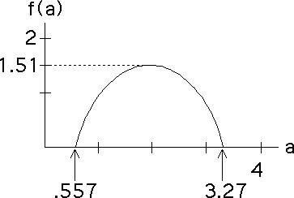

| Recalling df/dalpha = q, we see the only
critical point of |
| Because the graph of |
| Substituting |
| p1qr1tau(q) + ... + pNqrNtau(q) = 1 |
| the equation defining |
| we obtain |
| r1tau(0) + ... + rNtau(0) = 1 |
| We recognize this is the Moran
equation for the dimension, d, of the attractor, with |
| Recalling |
| f(alpha) = tau(0) = d |
| That is, the maximum value of f(alpha) gives the dimension of the attractor. |
| To emphasize the point that the maximum value of the f(a) curve is the dimension of the underlying fractal, suppose we change the four transformations so they all have scaling factors 0.4. |
| The dimension of the fractal is |
|  |
Return to Multifractals from IFS.